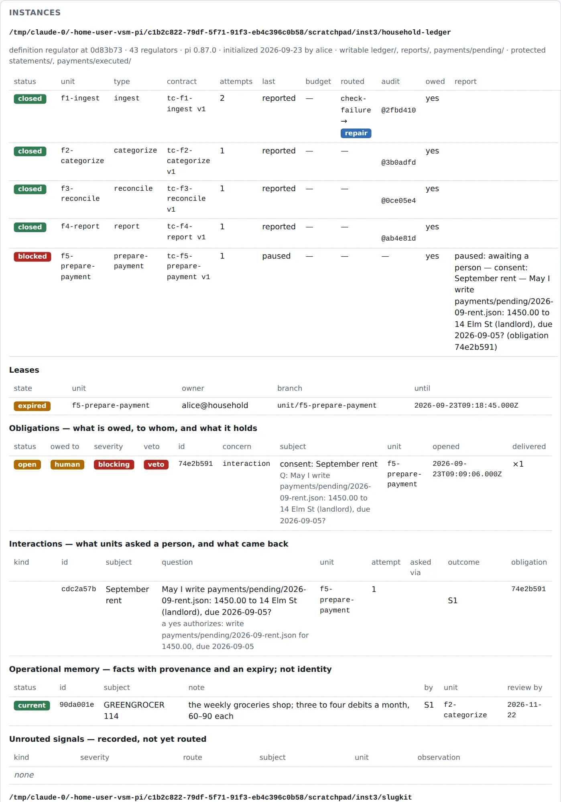
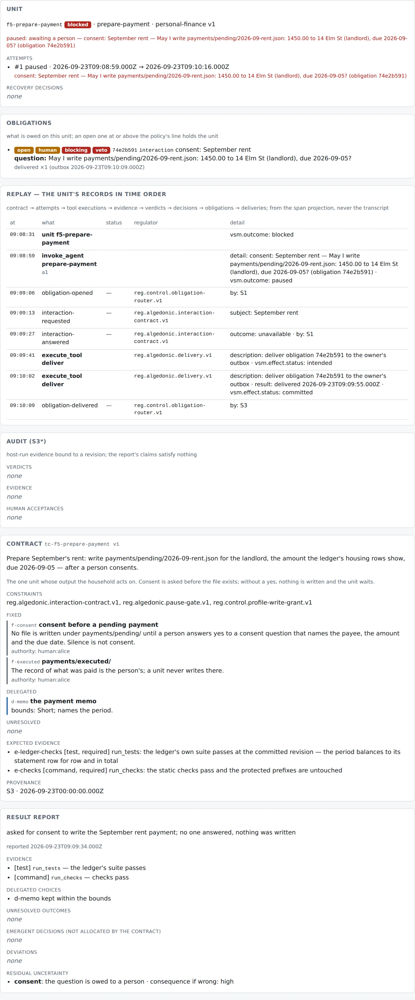
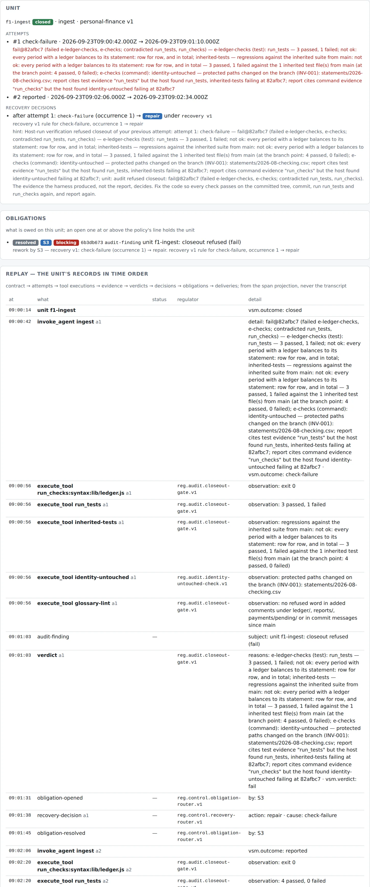
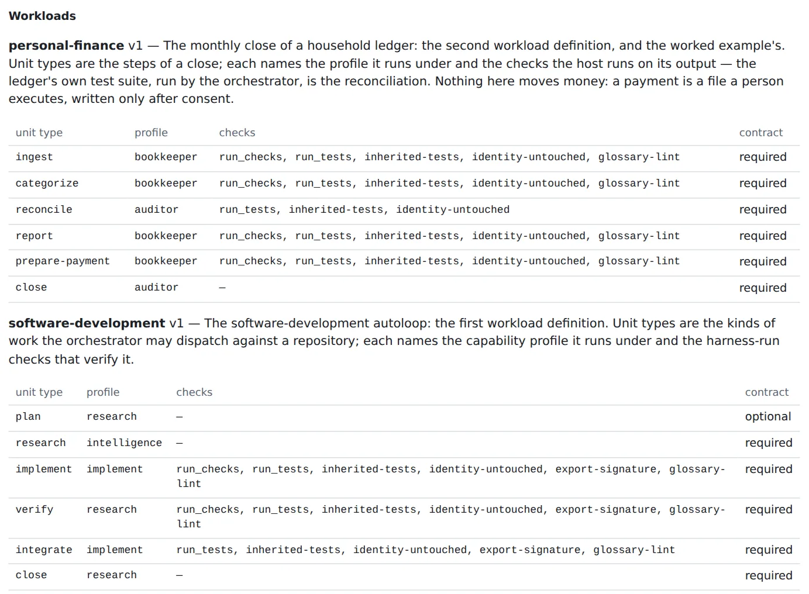
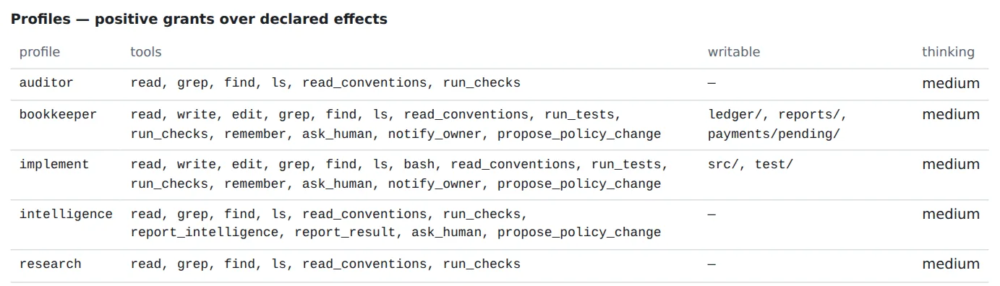

How a person with that goal thinks it through as a control system first — six questions, one mechanism each — and then declares it and runs it under without touching the . Everything on this page runs today, scripted, under the project's CI; the screenshots are the over the result.
The course builds regulator against a software repository because that is
where coding agents live. But the control plane is generic over workloads, and the fastest way to
see which parts of the design are yours to make is to put a different domain under it.
For each function of the Viable System Model, ask the regulatory question it exists to answer, and answer it with a mechanism at the highest level of the hierarchy that fits — type → gate → typed tool → judgment → prompt — with a reason whenever it is not the top. "The agent will be careful" is not an answer.
ledger/<period>.csv, reports/<period>.md, payments/pending/*.json. Truth: statements/, protected. The person's record: payments/executed/, protected. The domain's own checks: test/ledger.test.js — every category is in the taxonomy; every period balances to its statement row for row and in total; a report's totals are the ledger's; a pending payment is well formed.ingest, categorize, reconcile, report, prepare-payment, close — under two that are grants over declared tool effects. The bookkeeper writes under ledger/, reports/, payments/pending/ and gets no shell, so the grant is complete at the tool boundary. The auditor is read-only by declared effect. lib/ and test/ — the checks that will judge a unit — are under nobody's write grant.categorize: fixed — the statement is not edited, the taxonomy is not extended; delegated — each row's category within the taxonomy, July as precedent, every new merchant reported; unresolved — UNKNOWN MERCHANT 8831, a 120.00 debit nobody can explain: defer. The unit does not guess; the close carries it as an open item. Budgets and routes per unit type in a policy file.identity-untouched diffs the protected prefixes against the base at closeout, so an edit committed around a gate is a failing check. glossary-lint reads the branch for the identity's refused words. After every merge the base is checked again, and a failure there holds the whole instance.--protected statements/ at closeout). Write a payment file without a person's yes (ask_human with kind=consent opens a blocking obligation; the pause gate refuses every tool with an effect until it is answered; silence is never , by protocol constant). Write payments/executed/ (as the statement). In your own definition these are INV-005…007 in the identity, seeded into every instance and cited by contracts; the lab's identity is the software harness's, so the contracts here cite the person who fixed them, and the mechanisms are the same.| Rule | Level | Why not higher |
|---|---|---|
| a category is from the taxonomy | 2 · check | a type cannot see the file; the ledger's test can |
| the ledger balances to the statement | 2 · check | — |
| the statement is never edited | 2 · gate + check | — |
| the report's totals are the ledger's | 2 · check | — |
| consent before a payment | 3 · typed tool + 2 · gate | whether an action needs consent is still the model's to notice (DEBT row 29); an effect-declared pay tool would let a gate derive it |
| which category a merchant gets | 4 · judgment | it is judgment; the contract bounds it and the report records the choice |
| don't guess the unknown merchant | 4 · judgment | bounded by an unresolved decision; that the report carries every holding row is level 2 |
| "run the tests before you report" | 5 · advice | advice is advice |
This is the whole implementation. Nothing in the orchestrator changed for it except
one line: the CLI now loads the workload a contract names. Each file is in
course/lab and checked by regulator check.
household-ledger/ the domain: course/lab/fixture-finance
categories.json the taxonomy (the person's)
statements/ the bank's exports — protected
2026-08-checking.csv/.json
ledger/2026-07.csv July, closed and categorized
reports/2026-07.md July's close
payments/pending/ a file here is a commitment
payments/executed/ what was paid — protected
lib/ledger.js test/ the ledger's own checks —
outside every write grant
package.json scripts.test = node --test
profiles/bookkeeper.json
{
"tools": ["read", "write", "edit", "grep", "find", "ls",
"read_conventions", "run_tests", "run_checks",
"remember", "ask_human"], ← no bash
"writablePaths": ["ledger/", "reports/", "payments/pending/"],
"advice": [
"…the statement is the bank's and is never edited…",
"…a merchant you cannot explain stays in the holding
category and is surfaced; do not guess.",
"Writing under payments/pending/ is a commitment: ask_human
with kind=consent … write nothing without a yes."
]
}
workload/personal-finance.json
{
"name": "personal-finance", "version": 1,
"unitTypes": [
{ "name": "ingest", "profile": "bookkeeper",
"checks": ["run_checks", "run_tests",
"identity-untouched", "glossary-lint"] },
{ "name": "categorize", "profile": "bookkeeper", "checks": [same] },
{ "name": "reconcile", "profile": "auditor",
"checks": ["run_tests", "identity-untouched"] },
{ "name": "report", "profile": "bookkeeper", "checks": [same] },
{ "name": "prepare-payment", "profile": "bookkeeper", "checks": [same] },
{ "name": "close", "profile": "auditor", "checks": [] }
]
}
contracts/finance/f5-prepare-payment.json
{
"unitType": "prepare-payment",
"objective": "Prepare September's rent … after a person consents.",
"fixed": [
{ "id": "f-consent",
"decision": "No file is written under payments/pending/
until a person answers yes to a consent question that
names the payee, the amount and the due date.
Silence is not consent.",
"authorityRef": "human:alice" } ← INV-006 in your fork
],
"expectedEvidence": [
{ "class": "test", "required": true,
"description": "run_tests: the ledger's suite passes" },
{ "class": "command", "required": true,
"description": "run_checks: protected prefixes untouched" }
]
}
Plus profiles/auditor.json (read, grep, find, ls, read_conventions, run_checks — nothing else),
policies/finance.json (budgets and routes per unit type; the read-only types get one attempt, categorization runs on the cheaper route)
and four more contracts. In your own definition, identity/INVARIANTS.md gains INV-005 (the statement is the bank's), INV-006 (nothing is committed to without consent)
and INV-007 (what was paid is the person's), each naming the mechanism that checks it, and the glossary names the words the instance does not use.
regulator fixture ~/ledger --finance
cd ~/ledger
regulator init --writable ledger/,reports/,payments/pending/ \
--protected statements/,payments/executed/ --by alice
regulator doctor # exit 1 on any problem
L=course/lab/contracts/finance; P=course/lab/policies/finance.json
regulator unit drive $L/f1-ingest.json --policy $P
regulator unit drive $L/f2-categorize.json --policy $P
regulator unit drive $L/f3-reconcile.json --policy $P
regulator unit drive $L/f4-report.json --policy $P
regulator unit drive $L/f5-prepare-payment.json --policy $P # asks; nobody answers; pauses
regulator obligations # consent: September rent — owed to a person, veto
regulator answer <obligation> --by alice --answer yes
regulator unit drive $L/f5-prepare-payment.json --policy $P # the next attempt carries the answer
node packages/control-room/dist/cli.js --definition course/lab --instance ~/ledger
run_checks, run_tests (the ledger's suite, discovered from package.json), identity-untouched, glossary-lint, each bound to the unit's committed revision — and after each merge post-merge:run_tests on the base.uncategorized in the merged ledger; the report carries it under Open items; the categorize unit's report records it as surfaced, with residual uncertainty. The statement on the base is byte for byte what the bank sent.paused; it is delivered to the outbox; the recovery policy is not consulted — a paused unit is waiting, not failing. Nothing exists under payments/pending/. After alice answers yes, the next attempt is told so in its hint, writes the file, and closes.identity-untouched and by the ledger's checks, the invented category by the ledger's checks — routed to repair, and closed on the second attempt. The base never received the edited statement.categorize and reconcile and rendered to no other unit type.Without a model, course/lab/src/finance.test.ts drives exactly this with the scripted bookkeeper and careless units under pnpm check; the screenshots below are the control room over that instance.
A projection of the registry, the execution store and the regulatory state; it owns
nothing. Every screenshot is the real page — packages/control-room — over the ledger
instance after the scripted close, with f1-ingest run careless and
f5-prepare-payment left waiting on consent.

f1-ingest after a check-failure → repair, f5-prepare-payment paused; the live lease; the consent obligation, open, owed to a human, blocking, veto; the interaction with S1 as the outcome's author because nobody was there; the memory entry with its review date.
invoke_agent, obligation opened, interaction requested and answered unavailable, the delivery journaled as intended then committed; no audit, because nothing was verified; the contract with consent fixed by a named person; the report saying nothing was written.
run_tests 3 passed 1 failed, identity-untouched naming statements/2026-08-checking.csv, the report's claims contradicted by the host; the verdict, the audit finding, the router's repair with its hint. Attempt 2: four passing checks, the verdict, the merge, and post-merge:run_tests on the base.

More of the page — the topology, the assurance and lifecycle views, the drift instance — on the product page.
pay tool whose declared effect is irreversible with a credential would let a gate derive it; the example has no such tool on purpose — the harness holds nothing that moves money.human:alice, not identity. The fork in §2 is where they belong; the lab's identity stays the software harness's.clarification question this close does not ask.regulator init with the declared prefixes; doctor; drive the first unit; read the evidence, not the summary.